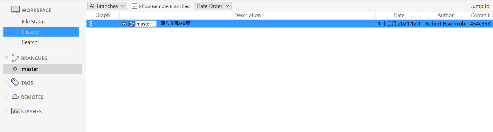
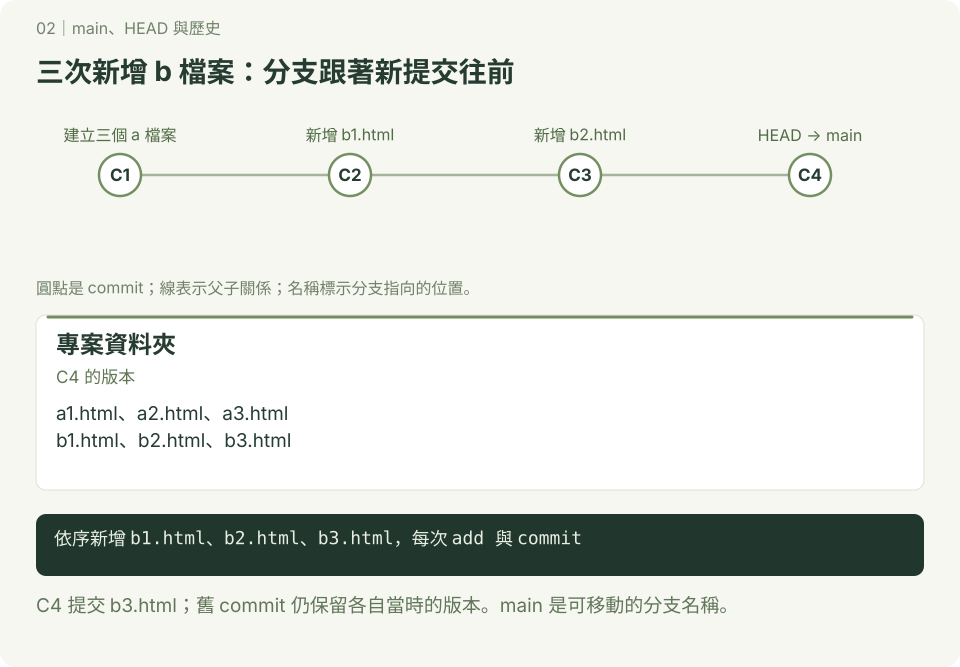
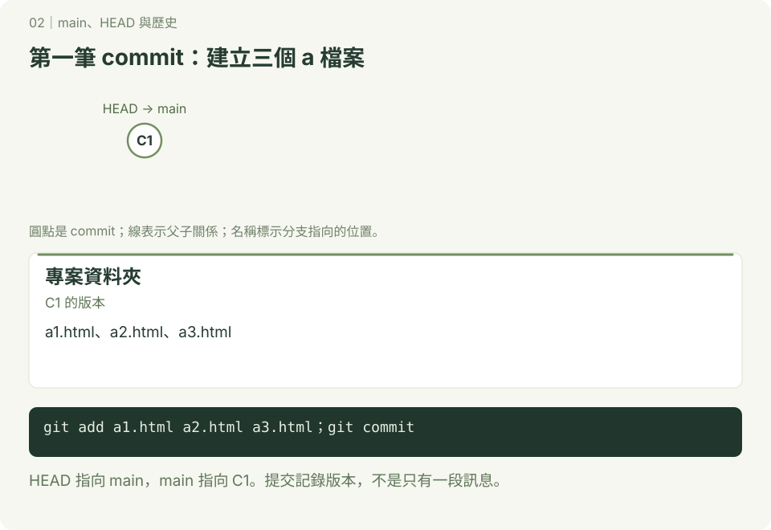

main、HEAD 與歷史
圖解已重畫為 SVG；圖中使用 main 與簡化 commit 名稱，舊範例若使用 master，主要分支的概念相同。互動版見 Git 圖解教室。
初始化時的分支名稱取決於設定，也能用 git init -b main 明確指定。下面保留使用 master 的舊範例；master 與 main 都可以作為主要分支。
設定未來新專案預設使用 main
bash
git config --global init.defaultBranch main這不會改名現有分支；若要替目前分支改名，可用 git branch -m main（先確認 main 名稱尚未使用）。
建立專案和查看master分支狀態
- 開啟gitBash
操作與輸出
$ cd ~/Documents #進入文件夾
$ mkdir gitTogether1 #建立gitTogether1資料夾
$ cd gitTogether1 #進入gitTogether1資料夾
$ git init #初始化git
$ git status
_________________________
On branch master
No commits yet
nothing to commit (create/copy files and use "git add" to track)上方的On branch master,代表目前的工作分支是在master上.
建立三個檔案，產生一個紀錄點(commit)
操作與輸出
$ touch a1.html
$ touch a2.html
$ touch a3.html
$ git add —all
$ git commit -m “建立3個a檔案“
$ git log #git log 是觀察commit的歷史資料
________________________________________________________________
commit 454c9536865cfbc883084f3da2c4ec025cc09c85 (HEAD -> master)
Author: Robert Hsu <roberthsu2003@gmail.com>
Date: Wed Dec 1 12:14:23 2021 +0800
建立3個a檔案上方的（HEAD -> master)代表目前的工作分支是在master分支
查看目前分支
操作與輸出
$ git branch
_________________
* master上方代表目前專案只有一個分支,「*」是代表目前的工作分支
下方是source tree的顯示 

建立三個紀錄點(commit)
操作與輸出
$ touch b1.html
$ git add b1.html
$ git commit -m “建立b1.html”
$ touch b2.html
$ git add b2.html
$ git commit -m “建立b2.html”
$ touch b3.html
$ git add b3.html
$ git commit -m “建立b3.html”
$ git log
____________________________________________________________
commit 63d60eb52ca806973f428b93e734cbea34cd3376 (HEAD -> master)
Author: Robert Hsu <roberthsu2003@gmail.com>
Date: Wed Dec 1 12:48:40 2021 +0800
建立b3.html
commit 58718cc8bdddb84634d94935a1ce7317fee9356b
Author: Robert Hsu <roberthsu2003@gmail.com>
Date: Wed Dec 1 12:47:58 2021 +0800
建立b2.html
commit 64211012f1fab196ddf1f55a214c70de8321a270
Author: Robert Hsu <roberthsu2003@gmail.com>
Date: Wed Dec 1 12:47:12 2021 +0800
建立b1.html
commit 454c9536865cfbc883084f3da2c4ec025cc09c85
Author: Robert Hsu <roberthsu2003@gmail.com>
Date: Wed Dec 1 12:14:23 2021 +0800
建立3個a檔案- 有4個commit,最新的是在最上面
- HEAD代表目前所在的commit
- master代表目前master所指向的commit

結論
- HEAD 代表目前我們所在的commit
- HEAD->master 代表我們所在的commit是master分支
- 當commit一個新的記錄點(commit)時,HEAD和master同時也會更新目前指向的記錄點.
- 依此方法,HEAD和master會永遠在這一串記錄點(commit)的最上方.(以目前所學的是如此）
